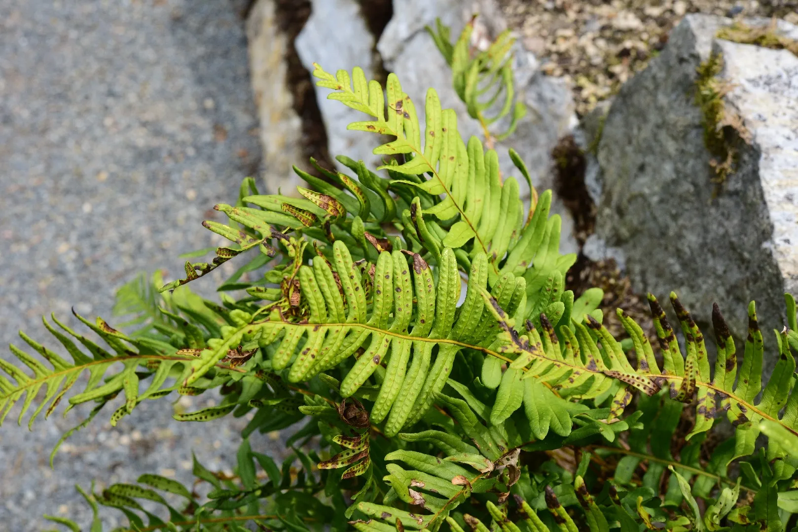

Osladiče
V čem jsou speciální?
Osladiče jsou zvláštní skupinou kapradin s několika jedinečnými znaky.
Mají silné, masité oddenky, které často obsahují zásobní látky.
Jejich listy jsou tuhé, lesklé a často přetrvávají i přes zimu.
Výtrusnice osladičů nejsou uspořádané do kup, ale rozptýlené po spodní straně listů.
Gametofyt osladičů bývá dlouhověký a může žít i několik let.
Osladiče dobře snášejí sucho a rostou často na skalách nebo v lesních stržích.
Díky své stavbě a přizpůsobivosti patří mezi nejodolnější kapradiny.
Příklad Osladiče
osladič obecný
Dorůstá výšky asi 20 až 40 centimetrů.
Roste převážně na skalách, kamenech a kůře stromů, často ve stinných a vlhkých lesích.
Má plazivý, masitý oddenek, kterým se vegetativně rozmnožuje.
Listy jsou zpeřené, kožovité a stálezelené, takže přetrvávají i přes zimu.
Rozmnožuje se také výtrusy, které se tvoří ve výtrusnicích na spodní straně listů.
Je to odolná a dlouhověká kapradina, běžná v celé Evropě i v Česku.
